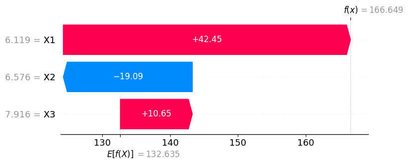
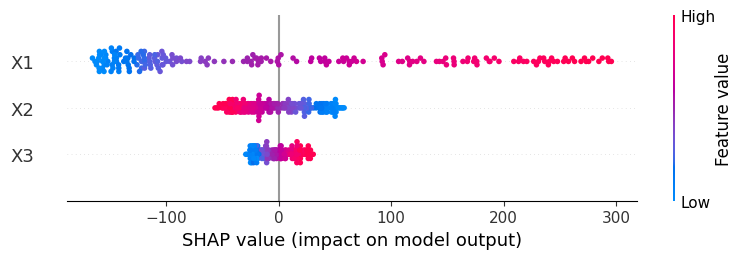

Shapley values
Introduction
Shapley values were originally proposed in the 50s as a way of distributing a total prize among a series of players participating in a game. If you imagine the prize is the model output \(y\), and the players are the individual features \(x_i\), you can re-use the same theory to better understand ML models!
Picture this. Your model produced an output \(f(x)\), and you want to understand why. Shapley values decompose your prediction into parts
where each \(\phi_i\) summarizes the contribution of feature \(x_i\) to the output! and \(\phi_0\) is a baseline constant value.
Example
You have a model to predict someone's expected yearly salary and want to explain why for person \(X\), the output was $ 89'000. Shapley could then give you a decomposition such as
| Feature | Shapley value |
|---|---|
| \(\phi_0\) | 45'000 |
| age = 42 | +33'000 |
| education = MSc | +4'000 |
| eyes = brown | -1'000 |
| fav cheese = gouda | -3'000 |
| children = 3 | +11'000 |
| Total 💰 | 89'000 |
where \(\phi_0\) is the average salary predicted by the model.
That's kind of cool, right? Even if your model isn't linear, Shapley gives you the isolated contributions of each feature to the predicted value.
How does the method work?
The method is grounded in game theory 🎲 and statistics 📊.
It regards \(X\) and \(f(X)\) as random variables, and computes the baseline \(\phi_0\) as the expected value
whereas each individual feature contribution \(\phi_i\) is given by
The formula above looks intimidating, but it's actually a simple weighted sum. For any so called coalition \(S\), the first terms weights its importance, and the second term is the difference in function values when the feature \(X_i\) is included vs when it's not included.
So it's a simple delta! computed and weighted across all possibles combinations of features.
Example
You have the following values \(X_1 = 10\), \(X_2 = 20\), \(X_3 = 30\). Here are all coallitions for \(i=1\)
| \(S\) | \(f(S)\) | \(S \cup \{i\}\) | \(f(S \cup \{i\})\) |
|---|---|---|---|
| [ \(\emptyset\) ] | \(f(\,\cdot\,,\,\cdot\,,\,\cdot\,)\) | [\(1\)] | \(f(10,\,\cdot\,,\,\cdot\,)\) |
| [ \(2\) ] | \(f(\,\cdot\,,20,\,\cdot\,)\) | [\(1\),\(2\)] | \(f(10,20,\,\cdot\,)\) |
| [ \(3\) ] | \(f(\,\cdot\,,\,\cdot\,,30)\) | [\(1\),\(3\)] | \(f(10,\,\cdot\,,30)\) |
| [ \(2,3\) ] | \(f(\,\cdot\,,20,30)\) | [\(1\),\(2\),\(3\)] | \(f(10,20,30)\) |
So a coallition \(S\) can be thought of as the set of players active in the game.
But what does \(f(\,\cdot\,,20,\,\cdot\,)\) even mean? How can we make that evaluate to a scalar in a sensible way?
Well, there are multiple ways of doing that and, up to this date, people debate what the best thing to do is. Next, we explore some of the possibilities.
The many possible flavors
In this section we will see how to turn partially-evaluated function e.g. \(f(10, \,\cdot\,,\,\cdot\,)\) into scalars in a reasonable way.
How about setting the components \(x_2, x_3\) to zero? Or, more in general, defining a baseline vector \(\bar x\) from which to borrow components every time we need them? In a demographic model, this could be your average individual, and in a computer vision model, your average input image. That's known as the baseline approach.
Some would argue that this is not realistic. That if we think our features have some intrinsic distribution, we should fill the gaps in \(f(\,10,\cdot\,,\,\cdot\,)\) by sampling from the distribution of the missing values, and summarize what we've seen by reporting an average.
Which distribution should it be, though?
- The marginal \(p(x_2, x_3)\) ?
- The marginals \(p(x_2), p(x_3)\)?
- The conditional \(p(x_2, x_3 | \, x_1 = 10)\)?
What if you don't have a distribution for your features, but only know max/min values for them. Should you maybe sample the domain uniformly?
All these approaches are possible, but the resulting Shapley values should be interpreted accordingly1.
A computational example
In this notebook, we have a simple 2-layer Neural Network that was trained to learn a certain dataset.
To try and explain our black-box model, we use SHAP: first, instantiate a so-called "explainer", passing your model mlp and a dataset X. Next, you pass you dataset to the explainer again, which will compute the values for the entire dataset. To see what they look like for the \(20\)th data point, you can use a nice waterfall plot
import shap
explainer = shap.Explainer(mlp.predict, X)
shap_values = explainer(X)
shap.plots.waterfall(shap_values[20])

Here we have the features \(x_1 = 6.119, x_2 = 6.576, x_3 = 7.916\), linked to Shapley values \(\phi_0 = 132.635\), \(\phi_1 = 42.45\), \(\phi_2 = -19.09\) and \(\phi_3 = 10.65\), for a final prediction of \(f(x) = 166.649\).
But that's only for a single datapoint. If you wanna know the rest of the story, how the Shapley values look across the entire dataset \(X\), you can call the summary_plot method

The plots tell us \(x_1\) seems to have overall the highest impact on the predictions (largest spread). Also, \(x_1\) and \(x_3\) have a positive impact on the model output for higher feature values (red), whereas \(x_2\) has a negative effect on the output (note how the blue and red colors are reversed). Looking at our ground-truth
it turns out these explanations are very much aligned with it23! 😇
-
If for example you disregard a part of your domain where \(f\) depends heavily on \(x_2\), this won't be reflected on your \(\phi_2\) value (and other \(\phi_i\) as well). ↩
-
N.B. the package is trying to explain the model, not the ground-truth. If the training was flawed or the data had too much noise, the model would be a bad representation of it, and the Shapley values wouldn't reflect the ground-truth at all. ↩
-
Also, if you were wondering, SHAP defaults to marginally sampling the group of missing features, i.e., sampling from \(p(x_2,x_3)\) when \(x_1\) is given. ↩